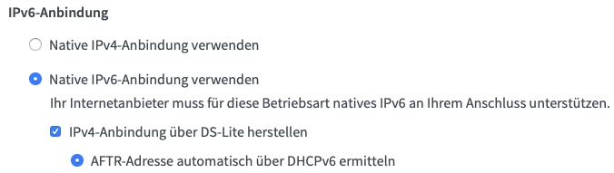
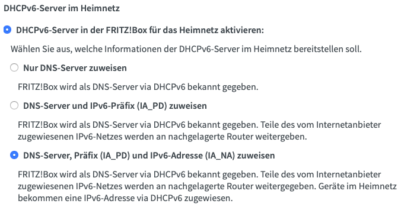

SSH over IPv6¶
In this guide we will configure SSH on a Raspberry Pi so that it can be reached via IPv6 even from an outside network. This is especially useful if your ISP only grants a Dual-Stack Lite connection.
Raspberry Pi settings¶
At first we have to enable the Pis IPv6-module by editing the /etc/modules file:
# sudo vim /etc/modules
ipv6
ip a. To make sure that your SSH client also accepts connections via IPv6 and not only via IPv4, we have to adjust the corresponding config file:
# sudo vim /etc/ssh/sshd_config
AddressFamily and make sure it is not set to inet (IPv4 use only). You can decide if you would like to enable IPv4 and IPv6 connections (by using any), or if you go for IPv6 connections only (inet6). I decided to enable both communication protocols, so that my line looks like this:
AddressFamily any
sshd_config:
PasswordAuthentication no
Router settings¶
To make sure your internet router also works with IPv6 DS Lite and that it assigns global IPv6 addresses to your local devices (including your Raspberry Pi), some adjustments might have to be made (Note: These settings depend on the router you use. I'm using an AVM Fritzbox, whose configuration can differ from your router). At first I make sure my router uses a native IPv6-connection instead of IPv4 tunneling for IPv6 connectivity by setting the following in Internet -> Zugangsdaten -> IPv6:  Afterwards we configure our DHCPv6 server in Netzwerk -> Netzwerkeinstellungen -> IPv6 Adressen, so that it assigns IPv6 addresses from your address range to the devices you are port forwarding, making them directly addressable from the internet:  TODO: Describe port forwarding At this point you should be able to connect to your Raspberry Pi from the internet via SSH using the following command:
# ssh -6 <user>@<global ipv6>
Configure Dynamic DNS (optional)¶
By configuring DynDNS you can connect to your Raspberry by using a hostname instead of the complete IPv6 address. I'm using a hostname from dynv6.com as they support IPv6, but of course you are free to choose a different service. After creating a hostname we have to make sure the hostname is always pointing at the current IPv6 address of the Pi. Therefor I wrote a small script based on a script from dynv6.com:
#!/bin/sh -e hostname=<yourhostname> device=$2 token=<yourtoken> file=$HOME/.dynv6.addr6 [ -e $file ] && old=`cat $file` if [ -z "$netmask" ]; then netmask=128 fi if [ -n "$device" ]; then device="dev $device" fi address=$(ip -6 addr list scope global $device | grep -v " fd" | sed -n 's/.*inet6 \([0-9a-f:]\+\).*/\1/p' | head -n 1) if [ -e /usr/bin/curl ]; then bin="curl -fsS" elif [ -e /usr/bin/wget ]; then bin="wget -O-" else echo "neither curl nor wget found" exit 1 fi if [ -z "$address" ]; then echo "no IPv6 address found" exit 1 fi # address with netmask current=$address/$netmask if [ "$old" = "$current" ]; then echo "IPv6 address unchanged" exit fi # send addresses to dynv6 $bin "http://dynv6.com/api/update?hostname=$hostname&ipv6=$current&token=$token" $bin "http://ipv4.dynv6.com/api/update?hostname=$hostname&ipv4=auto&token=$token" # save current address echo $current > $file
# chmod +x /path/to/dynv6.sh
# crontab -e
*/5 * * * * /path/to/dynv6.sh
ssh -6 <user>@<your hostname> instead of your IPv6 address only. You can also use your own subdomain name by configuring a CNAME record pointing to the DynDNS hostname in your DNS configuration.